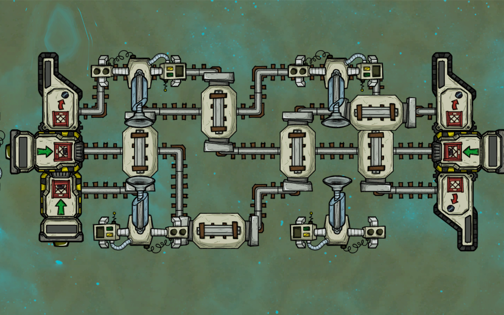
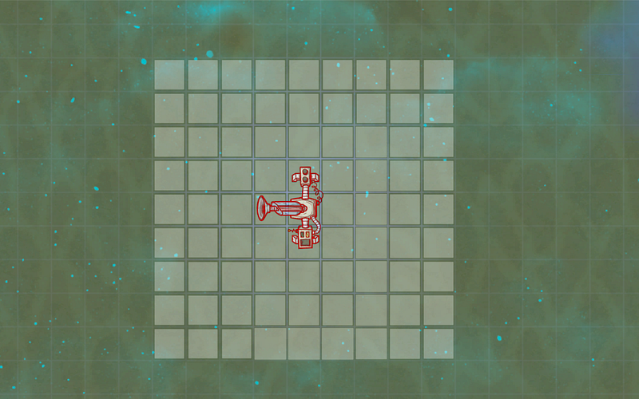
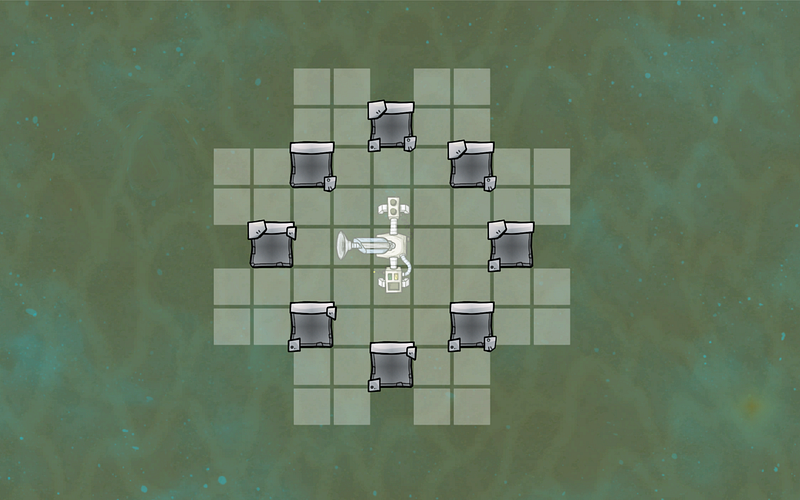
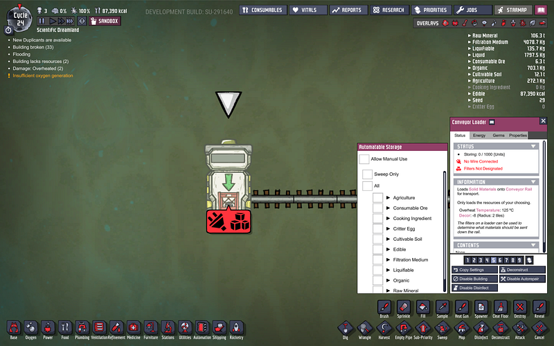
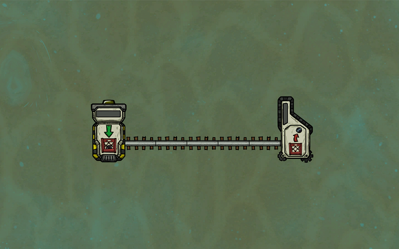
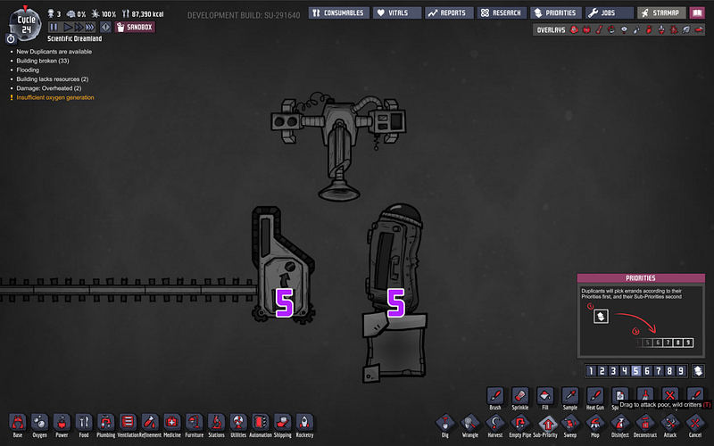

初心者のための物流システムの基本
初心者のための物流システムの基本

最初に物流システムを組み上げようとするとほぼ必ず「あれ？何も動かないぞ？」となるはずだ。本記事ではどうやって物流システムを組むかを解説する。
スイーパ
まずスイーパ単体を見てみる。自動掃除機の役割は、本体を中心とした9 x 9タイルの中での物の移動だ。一部屋の中ではこれだけである意味物流システムを組める。

例えば、岩石粉砕機で生成した石灰を精錬装置に送り込むとか、電気グリルで調理した食物を冷蔵庫に入れる、逆に冷蔵庫にある食材をグリルに送る、などという行為がスイーパ単体で実現できる。
また、スイーパの届く範囲内であれば、これから新たに作られる施設とかの素材もスイーパが提供することができる。
スイーパの届く範囲は9x9タイルだが、途中に障害物となるタイルがあるとそこから先には届かない。設置するときにはスイーパの有効範囲をちゃんと確認してからにすること。

ローダ、レセプタ
これに対してローダとレセプタは、単体では容量の少ない格納庫にすぎない。
ローダは何を格納するのか指定すると、それを格納することができる。

さらにローダとレセプタの間をレールで繋げることにより、複製人間ないしスイーパが入口（ローダ）に何かを入れると、出口（レセプタ）からそれを取り出せるようになる。
レセプタ側では何を受け取るのか指定することはできない。

ローダもレセプタもデフォルト状態ではスイーパが使う前提となっており、複製人間がそこに物を入れることも取り出すこともできない。もしこれを許容したかったら、手動での使用を許可する設定にしないといけない。
ローダとレセプタの間のレールに関しては液体パイプ等と同じように物流が詰まる現象が起こり得るので注意だ。
物品が流れる方向の決定ルール等は配管マスターへの道で説明したのと同じなのでそちらを参照してほしい。
スイーパとローダ・レセプタを組み合わせると、畑で栽培したものを冷蔵庫に送り、それを自動的に電気グリルに提供。さらに電気グリルで調理したものを食堂横の冷蔵庫に送るというような物流システムを組める。
優先順位の設定
スイーパとレセプタの組み合わせで注意したいのはレセプタと目的地の格納庫の優先順位だ。レセプタも一瞬の格納庫なので、ゲームシステム的には「物品Xをどちらの格納庫に送るべきか」を判断するときに優先順位の高い方に送る。
レセプタと冷蔵庫があって、レセプタの優先順位が5、目的地の冷蔵庫も5だとしたら、ゲームシステム的にはどちらに物品があっても問題ない状態になっているので、レセプタから冷蔵庫への移動は行われない。

そこでレセプタを4とすれば、こんどは冷蔵庫の方が優先度が高いのでスイーパがレセプタから冷蔵庫に物品を移動してくれる。
輸送中の物品
レールを伝って輸送中の物品は基本「丸裸」の状態と同じである。なので移送している物品の特性に気をつけつつ移動させる必要がある。
例えばここで水の中にあったヘドロをレール上に移動させて水の外にだすと、汚染酸素を排出する。
ヘドロ置き場からマッシュルーム畑にヘドロを送るような場合にはこの汚染酸素によって二酸化炭素の位置が気圧でずれないように注意する必要がある。
逆にこのヘドロを塩素の中を通るように輸送すれば、その間に殺菌される。
危険な場所・士気ペナルティのあるエリアでの作業
単純に物品を自動的に移動させるだけでも複製人間の手が空いてすばらしいのだが、この物流システムの構築が目に見えて役に立つのは、いわゆる「複製人間を入れたくない場所」ともっと勝手の良い場所の間の資源を移動を行わせる時だ。
例えば間欠泉から高温の金属が湧き出てくる場所にはあまり複製人間を送り込みたくない。
できれば、その部屋は断熱タイルで囲ってしまいたいところだ。そうすると複製人間はもう入れない。
そこで、スイーパ、ローダ、そして自動掘削機を入れておく。

ただ、金属マグマはそのまま流れさせておくと持ち運べないので冷却する必要がある。

マグマを使って水蒸気を発生させて云々、という方法もあるのだが、自分は水蒸気の扱いが下手なので、冷却には間欠泉が活動をとめないギリギリの量の汚染水を流し込み続け、（完全に水没すると活動が止まる）そこから出てくる水蒸気は即座にさらなる汚染水で冷却して真水にしてしまう（上記画像のパイプ部分）。なお、この設計のポイントは水が完全にひからびないようにしつつ、排水を続ける段差の設置です。
このようにしておけば、マグマが流れ出るそばから汚染水に接触＋凝固して精錬済み金属に変化する。蒸気はすぐ水になって落ちてくる。
それをスイーパがどんどんローダに積み込んでいき、どこかしらかの格納庫に保存する（本当なら完全に蓋をしたいところだが、この例ではそこまでできていない）

このように、スイーパ、ローダ、レセプタを使って物流システムを組むと色々と便利なことができるので、是非使い方を覚えよう